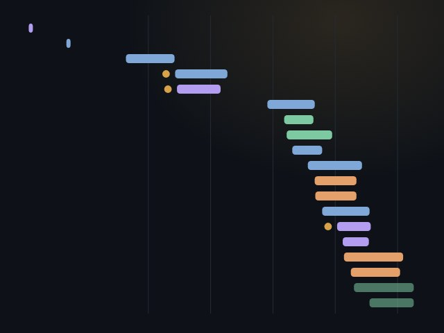
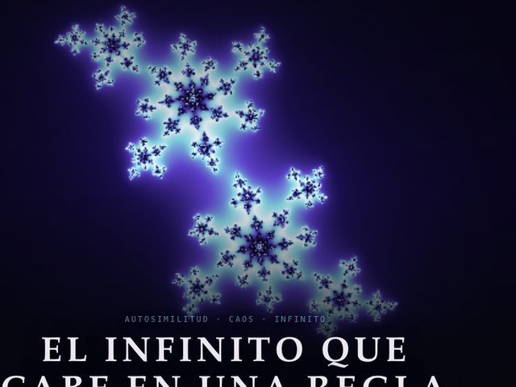
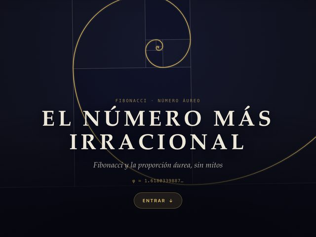
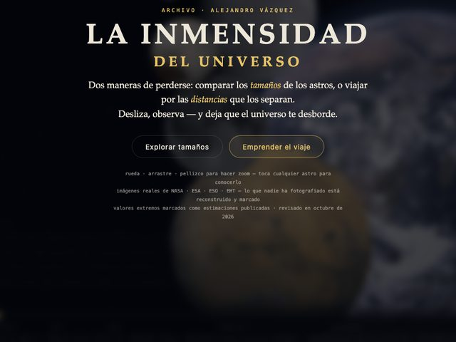
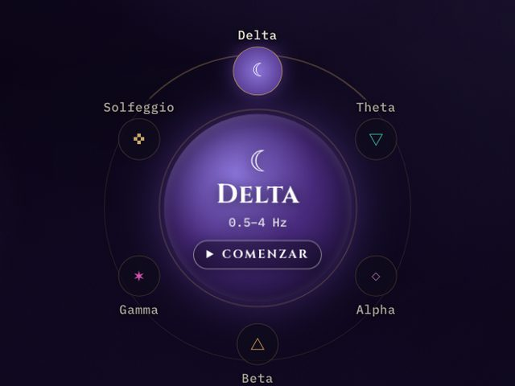
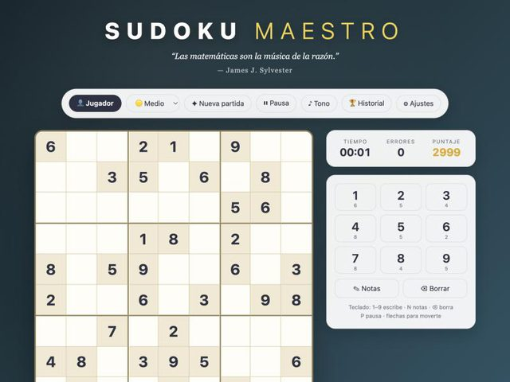
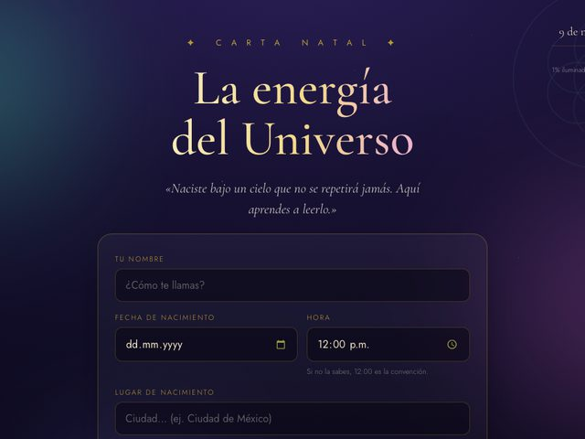

-

Ciencia· Historia de la cienciaNoviembre 2026
Mentes que cambiaron el mundoInteligencia, descubrimiento y el precio de tener razón antes de tiempoDiecinueve personas que descubrieron o inventaron algo para la humanidad, de Arquímedes a Katalin Karikó: lo que dieron, la época que les tocó, su vida íntima y cómo las juzgó su tiempo. Con una línea de tiempo, un podio de las tres mentes más brillantes y un criterio honesto: aquí no se inventa ningún CI.
Abrir→
-

Matemáticas· GeometríaNoviembre 2026
El infinito que cabe en una reglaUn recorrido por los fractalesPuntos lanzados al azar que dibujan un triángulo perfecto, una costa que no termina de medirse, un viaje de un billón de aumentos por el conjunto de Mandelbrot, helechos hechos con cuatro reglas, el caos de Lorenz y la forma quebrada del Dow Jones. Cada sección es visual primero; las fórmulas están a un botón. Al final, un laboratorio con doce fractales.
Abrir→
-

Matemáticas· NúmerosOctubre 2026
El número más irracionalFibonacci y la proporción áurea, sin mitosUn recorrido visual por la sucesión de Fibonacci y φ: de dónde sale, la espiral, el girasol, los mitos que no resisten una regla y los retrocesos que usan los traders, con un tramo real del Dow Jones. Cada sección es visual primero; la demostración está a un botón.
Abrir→
-

Ciencia· AstrosOctubre 2026
La Inmensidad del UniversoUn atlas del vértigo cósmicoCompara el tamaño de los astros, de una estrella de neutrones al universo observable, o viaja de la Tierra al borde de lo visible, incluso a la velocidad de la luz en tiempo real. Con fotografías reales de NASA, ESA y ESO; lo que nadie ha fotografiado está reconstruido y marcado.
Abrir→
-

Misticismo· SonidoOctubre 2026
Frecuencias binauralesDos tonos, uno por oído, y el pulso que el cerebro pone entre ambosGenera en tu navegador tonos binaurales para dormir, meditar, calmarte o enfocarte, con temporizador, respiración guiada y sonido ambiente. Necesita audífonos. Es bienestar sonoro, no tratamiento.
Abrir→
-

Matemáticas· JuegosOctubre 2026
Sudoku MaestroSudokus sin fin, cada uno con una sola soluciónInventa un tablero nuevo cada vez y comprueba que tenga una sola solución, como debe ser. Tres niveles, notas, puntaje y una cita sobre los números en cada partida.
Abrir→
-

Misticismo· AstrologíaAgosto 2026
La energía del Universo — Carta NatalTu carta natal, calculada en tu propio navegadorCalcula tu carta natal con datos astronómicos precisos y la dibuja: planetas, casas y aspectos. No te dice qué significa; eso queda de tu lado. Tus datos no salen de tu dispositivo.
Abrir→